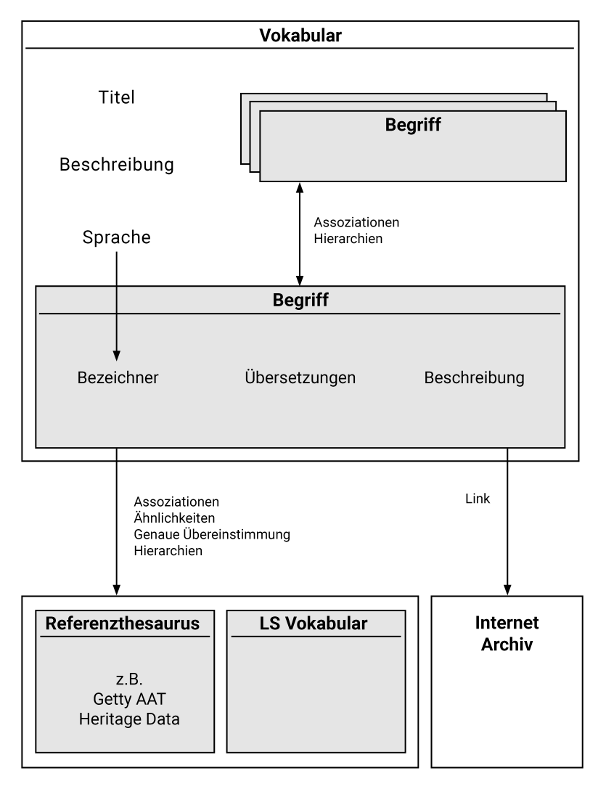
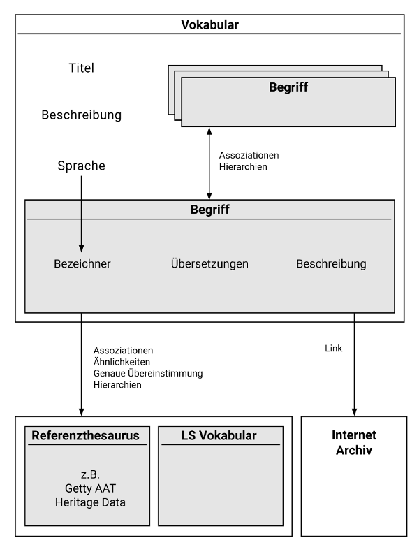

Datenmodell¶
Das Labeling System Datenmodell kann vereinfacht in folgendem Schema dargestellt werden.

Die vollständige Struktur kann im Datenmodell unter Nutzung des Labeling System Vokabulars eingesehen werden.
Das Labeling System Datenmodell kann vereinfacht in folgendem Schema dargestellt werden.

Die vollständige Struktur kann im Datenmodell unter Nutzung des Labeling System Vokabulars eingesehen werden.